Releaserecommended
Published by hand once a batch of features lands, built for four ABIs: arm64-v8a, armeabi-v7a, x86 and x86_64. It isn't a strictly stable channel and may still hide issues that haven't surfaced yet.
GitHub Releases ↗00NeriPlayer · Android audio player
NeriPlayer brings NetEase Cloud Music, Bilibili, YouTube Music and your local audio into one player — then adds word-by-word lyrics, a GLSL fluid background, USB exclusive output and sync that belongs to you alone.
The Android app is built on Jetpack Compose + Media3 for Android 9 and later; the desktop app is built on Tauri 2 for Windows, macOS and Linux. Free and open source, GPL-3.0.
Also on your computer: Windows · macOS · Linux desktop app ↘
Signals Multi-source Local first Self-hosted sync
Listening together tonight?
01Download · 下载
Pick phone or computer first, then the package that matches your device, and one click downloads it. The version, file size and SHA-256 checksum are read live from GitHub Releases. It’s free, with no ads of any kind.
SHA-256
Published by hand once a batch of features lands, built for four ABIs: arm64-v8a, armeabi-v7a, x86 and x86_64. It isn't a strictly stable channel and may still hide issues that haven't surfaced yet.
GitHub Releases ↗Every successful build on master uploads an arm64-v8a APK — grab one here if you want the newest bits first.
# Clone the repo with its submodules
git clone --recursive https://github.com/cwuom/NeriPlayer.git
cd NeriPlayer
# Build a debug APK and install it
./gradlew :app:assembleDebug
adb install -r app/build/outputs/apk/debug/app-debug.apkThe DEBUG build uses the package moe.ouom.neriplayer.debug and an orange icon, so it installs alongside the release.
| arm64-v8a | Nearly every phone and tablet from recent years |
|---|---|
| armeabi-v7a | Older 32-bit ARM devices |
| x86_64 / x86 | Emulators, Intel devices or Chromebooks |
Read the disclaimer and finish onboarding first. Onboarding explains the notification and local music permissions, which are only requested when you tap — skipping them won't stop you from using the app.
SHA-256
Published after each batch of features, with packages for Windows, macOS and Linux, plus SHA256SUMS.txt, macOS install notes and the source and build scripts for the bundled FFmpeg. When reporting an issue, include the build version from Settings → About.
To try changes that haven’t shipped yet, pick a successful run of the Artifacts workflow and download the build for your platform. You need to be signed in to GitHub; unzip the outer archive before installing.
# Clone the repo with the lyrics submodule
git clone --recursive https://github.com/cwuom/NeriPlayer-Desktop.git
cd NeriPlayer-Desktop
pnpm install --frozen-lockfile
# Start Vite and the Tauri dev window
pnpm tauri devYou also need the Tauri prerequisites and a toolchain to compile the FFmpeg C++ shim.
| Windows | The installer isn’t code-signed yet. If SmartScreen blocks it, choose “More info → Run anyway”; install the WebView2 runtime first if it’s missing |
|---|---|
| macOS | Ad-hoc signed and not notarized: drag it into Applications, open it once, then choose “Open Anyway” in System Settings → Privacy & Security |
| Linux | Make the AppImage executable after extracting; install deb / rpm with your distribution’s package manager |
Connect both to the same GitHub repository or WebDAV folder in Backup & Sync. The first time an old format is found you’ll be asked to upgrade; update your other devices to the latest version before confirming. Audio files are never synced.
02Dual-theme design · Themes
Clean and Material You, each with its own style. Compare Settings and Library across themes.
Clean brings your music forward with neutral surfaces, clear typography and a floating glass navigation bar.
03Now Playing · 正在播放
Switch between Clean and Material You, and compare the standard and immersive layouts. Play, seek or switch to lyrics inside the phone while Startrail repeats; use the button below to mute at any time.
Media3 / RuntimeShader
The Now Playing background is drawn by BgEffectPainter, which loads a GLSL / AGSL shader and renders it frame by frame through RuntimeShader. Palette first pulls five color roles from the cover — Base, Accent, Light, Dark and Bridge — then blends them into flowing patches and grain, wired to uMusicLevel / uBeat so it moves with the beat. It is not just a Gaussian-blurred cover.
This background is the app's own shader, ported to WebGL ↗
WaveformSlider
While playing, the progress bar becomes a slowly flowing wave; on pause it settles into a straight line, and while buffering it turns into a beating pulse. Underneath, quality, codec and format show as configured — like RAW · 48 kHz for this FLAC — and dragging gives haptic ticks along the lyric timeline.
Now Playing controls position
Holding the phone in one hand? Move shuffle, previous, play, next and repeat down within thumb reach, and bring the progress bar along if you like. While the controls sit at the bottom, the Dock becomes a regular toolbar so the two never overlap.
SyncedLyricsView
Under the controls sits a strip of synced lyrics: the current line lights up word by word, its translation follows only that line, and the rest fade quietly to the side. Tap a line to jump there, long-press to share. If it feels crowded, the cover-page lyrics and the bottom toolbar can each be turned off.
| No.NP-01 | Version— | PlatformAndroid | Page01 / 14 |
| StatusAndroid 9+ · fluid background & advanced blur need Android 13+ | |||
| Sourcecwuom/NeriPlayer · 3.7k · 131 | Date— | ||
| Demo track“星轨” · Neri Line · NeriPlayer PV | NP | ||
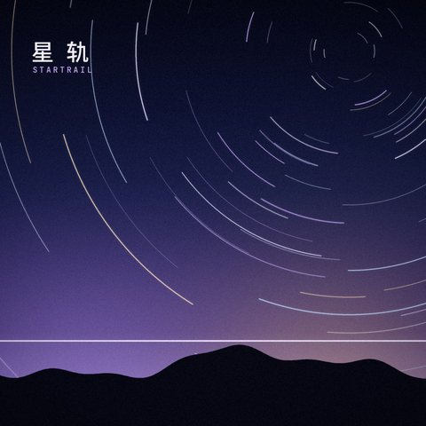
Local FilesRAW·48 kHz
04Lyrics · 歌词
The full lyrics page gives lyrics the whole screen: the active line is bold, its translation sits directly beneath it, and distant lines soften with depth blur.
LRC / YRC / TTML
Line-synced and word-synced LRC (including line-end times and bracketed word timestamps), YRC and TTML are all supported. The lyrics page only shows options the current song can actually use, and after a track change it waits until lyrics are resolved before fading in — no flash of empty space.
Fig. 02b — with romanization (illustration)
星の線路を そっと辿って
hoshi no senro wo sotto tadotte
For Japanese songs that ship with romanization, the secondary line can switch to it: it also sits right beneath the original, taking the translation's place instead of floating above. When a song has no romanization, the option simply isn't there — like “星轨” above, which only has “Trans”.
Fig.Clean · Real device screenshots
This is how it looks on a phone ↓
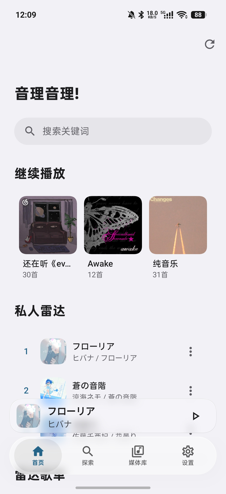
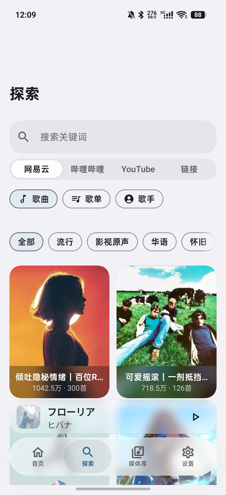
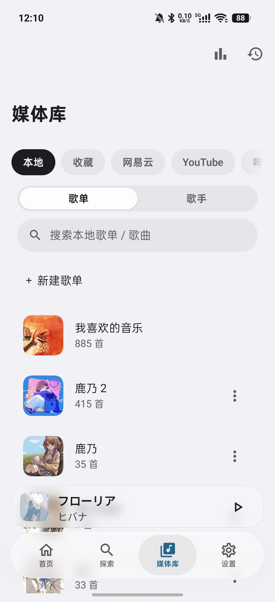
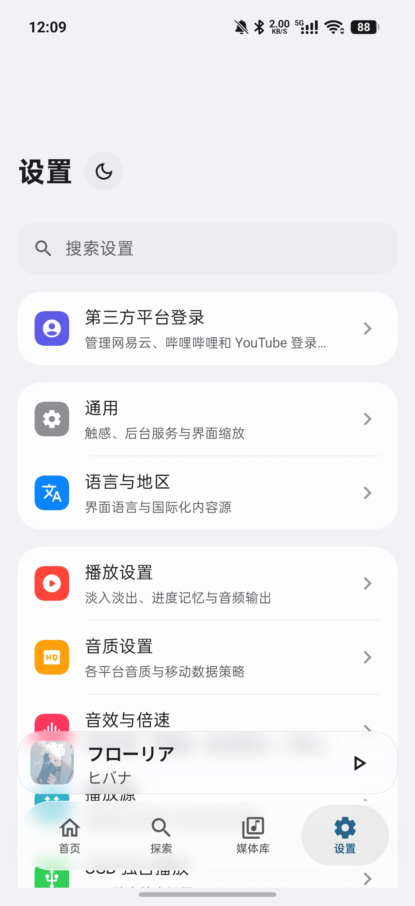
05Sources · 多源
Each platform is searched on its own and never mixed in — yet playback, downloads, playlists, history and stats share one set of local data and one playback core. Source resolution, failure recovery and automatic fallback are all orchestrated by PlayerManager.
Login · Search · Play · Download · Comments
From daily picks and Personal FM to artist pages, NetEase is the most complete line.
| Login | ✓ | Download | ✓ |
|---|---|---|---|
| Search | ✓ | Lyrics | ✓ |
| Playlists | ✓ | Comments | ✓ |
Favorites · Collections · Multi-part
Listen to video favorites like playlists: multi-part videos play and download as audio, with collection context kept all the way through.
BVID + CID, syncable via GitHub / WebDAVAccount sessions · Playback compatibility
In international mode, the home page puts YouTube Music playlists and song shelves first.
player.js firstThese capabilities only cover account sessions, playback compatibility and error recovery. They do not mean bypassing platform restrictions or redistributing media.
Import · Scan · Organize
Songs in a folder move into your library along with the lyrics and covers sitting next to them.
lrc / txt lyrics and cover / folder / front artworkAutomatic fallback
When a song won't play, NeriPlayer looks for another way first instead of just throwing an error.
Bilibili and local fallback are off by default — switch them on yourself
Share text → detail page
“Link recognition” on the Explore page takes a bare link, or an entire share message with a title and a short link.
season_id collection context; types without a detail page get a clear notice06Hi-Fi · 音质
In USB exclusive mode a native driver takes over compatible USB audio devices, so system sounds and other apps no longer share the channel. Turn on bit-perfect volume and software gain is pinned at 0 dB, handing volume back to the DAC.
Bit-perfect skips the effects chain ↷
07Native DSP · 音效
The system Equalizer and LoudnessEnhancer are gone, replaced by an in-house native DSP: float precision, placed before Media3’s output, zero added latency. On the phone it lives in Settings → Audio Effects & Speed, on desktop in the settings page of the same name, and both share the same 29 presets and parameters. The phone on the right is redrawn item by item from the app’s source and real screenshots. Press play, then turn whatever you like.
Settings · Audio effects & speed
At the top are the master switch and live status: the current output device, processing load and the clipping guard. Below are eight sections, each with its own switch. Turning one off only lets that part play as original, and your values stay put; a small dot lights up next to any section you have changed. Tap a section below and the phone flips to it.
Drag a dot on the curve or switch presets, and the sound really changes ↗
Sound previewWeb Audio approximates the effects. Your browser selects the output; native processing is available in the app.
Effect monitorModeled spectrum · switches to live analysis once you press play
Stereo field100%
OutputGR 0.0 dB
Processing · lit stages are active
08Listen Together · 一起听
Open a room, share an invite, and everyone's playback stays aligned in real time over WebSocket. The server runs on Cloudflare Workers and Durable Objects, and you can deploy your own in one click.
Room NR7K2Q · live sync
09Local & offline · 本地与离线
Playback cache, downloads, playlists, history and settings all stay on your device by default. When the network drops, Home, Explore, Now Playing, lyrics, playlists and downloads switch into offline mode and keep running on local files and cache.
NetworkStatusMonitor detects being offline from the system's default network; while offline, remote image requests are blocked and cached covers come first.
No system DownloadManager: plain HTTP appends with Range, chunked transfers resume by offset, and HLS recovers from checkpoints. The queue is persisted and resumes after a restart; canceling by hand cleans up partial files.
Cleanup only touches caches that can be rebuilt — songs you chose to download are never treated as cache. The audio cache is capped at 1 GB by default.
Neri feat. Noir / Karuha、Hanae
NeriNoirKaruhaHanae
Splits on feat., with, 和 / 与, the Chinese list comma, semicolons and slashes; artist pages can play everything, multi-select into a playlist, or batch-download online songs.
Separates playback / download traffic, Wi‑Fi / mobile / roaming and cache hits, and warns before downloading on risky networks.
10Sync & Privacy · 同步与隐私
NeriPlayer has no central server. Metadata such as playlists, favorites, recent plays and play stats only syncs to your own GitHub repository (private by default when created in the app) or WebDAV.
beforeOid; WebDAV uploads immutable objects first, then writes the manifest with a strong ETagNo ad SDKs, third-party analytics or crash-reporting SDKs.
No cloud media distribution, and no personal data gathered into the maintainers' hands.
Audio cache, downloads, cookies and playback tokens are never uploaded.
Local play history is never written back to third-party platforms, so it won't trip risk controls or suspicious-login checks.
Play counts, listening time and daily buckets are recorded against each song's stable identity, and they take part in sync merges too.
Listening time
Week / month / year use rolling 7 / 30 / 365-day windows; the weekly hot list only counts songs with at least 10 minutes of total listening, and the monthly list needs 30. Neither the GitHub repository nor the WebDAV files are end-to-end encrypted, so keep them safe.
11Personalize · 个性
Choose the quiet surfaces of Clean or the dynamic color of Material You, then adjust the accent, light or dark mode and interface size. Try them on the home screen below.
NeriPlayer
Continue
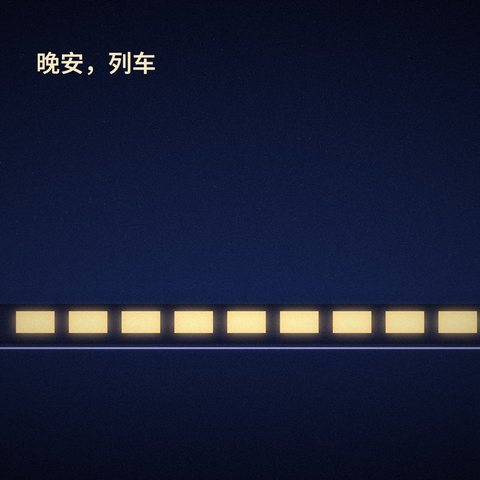
Local Files10 songs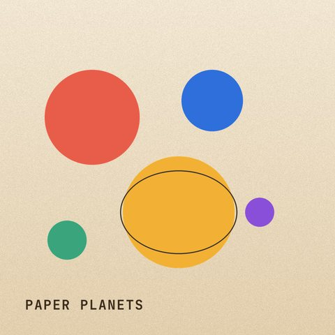
NeriPlayer PV10 songsPersonal Radar
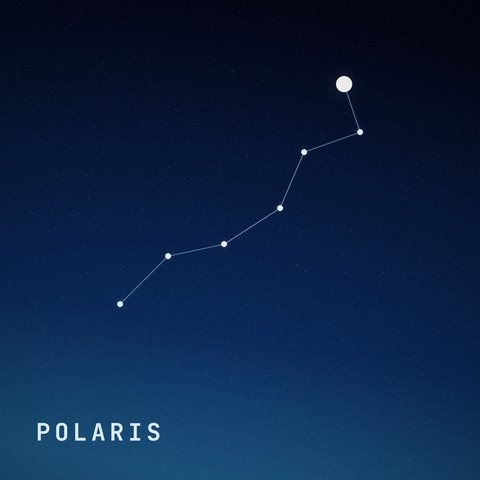
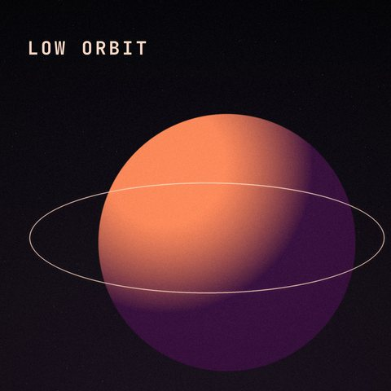
Radar Playlists
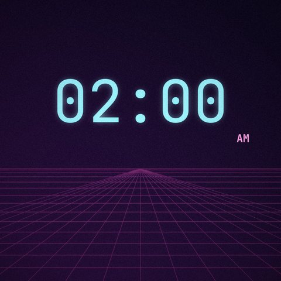
Radar时光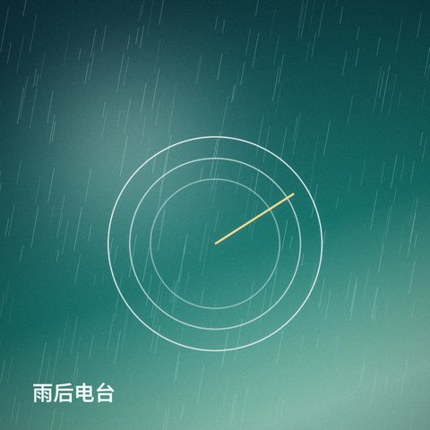
Radar宝藏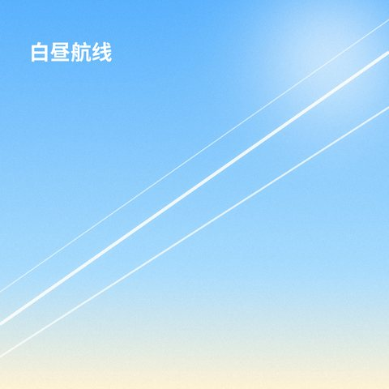
Radar新歌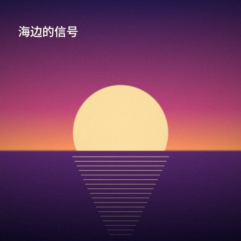
Radar乐迷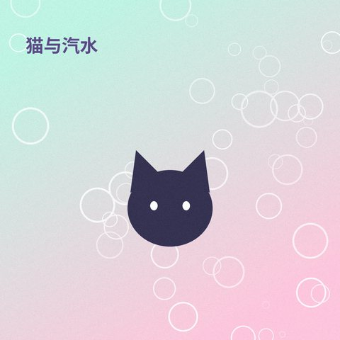
Radar神秘Trending
New Picks
12Tablet · 平板
On a wider screen, navigation moves to the side, the player splits into artwork and lyrics, settings show a list and details together, and the mini player becomes a full control bar. These four images were captured from the current app in a tablet emulator.
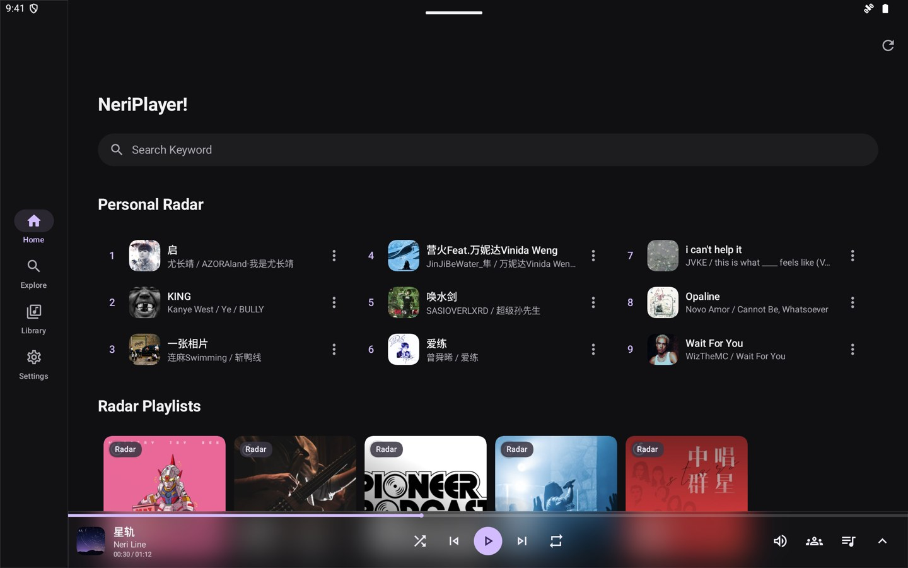
1 2 3 4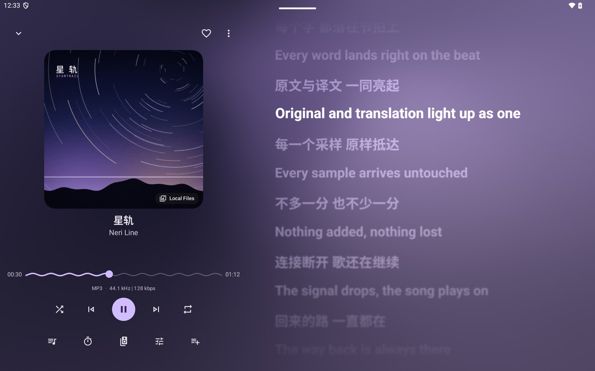
1 2 3 4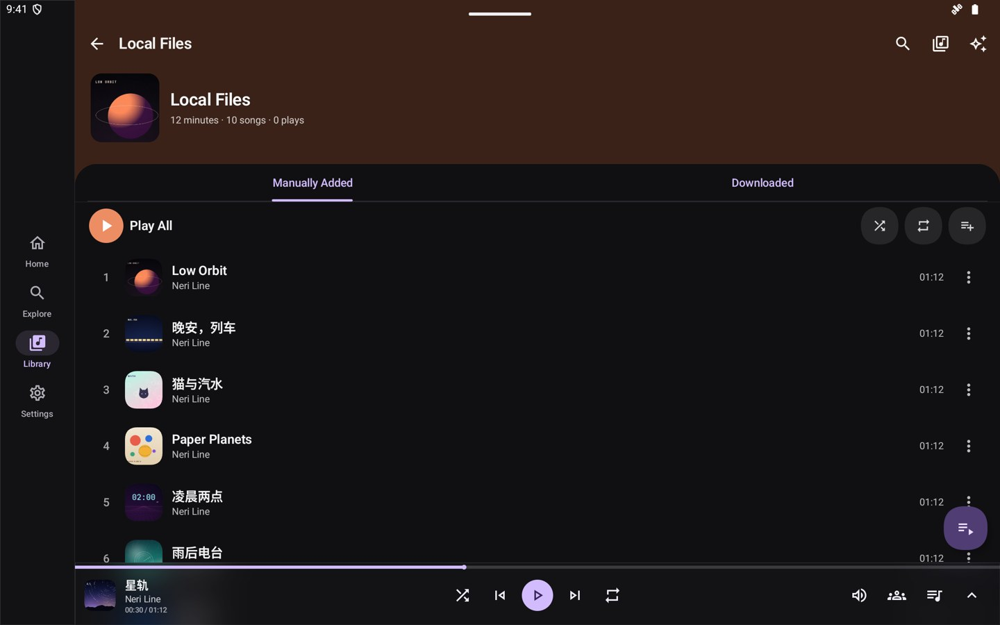
1 2 3 4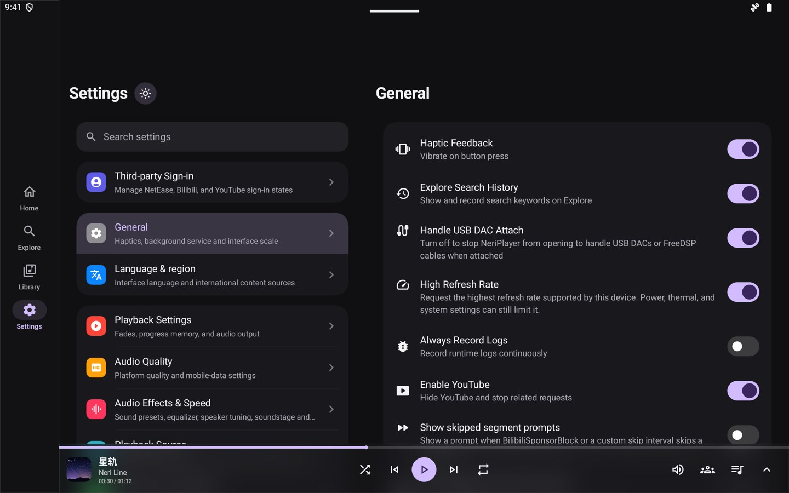
1 2 3 4Phones stay locked to portrait, and only Now Playing can rotate; tablets held upright get a Now Playing layout of their own.
13Desktop · 桌面
NeriPlayer Desktop brings the Android app to the desktop. It is built on Tauri 2 + Vue 3 + Rust for Windows, macOS and Linux. Playlists, favorites, recent plays and stats sync in the same format, and Listen Together joins the same room as your phone. The window below is the desktop app’s real interface, playing the same demo tracks.
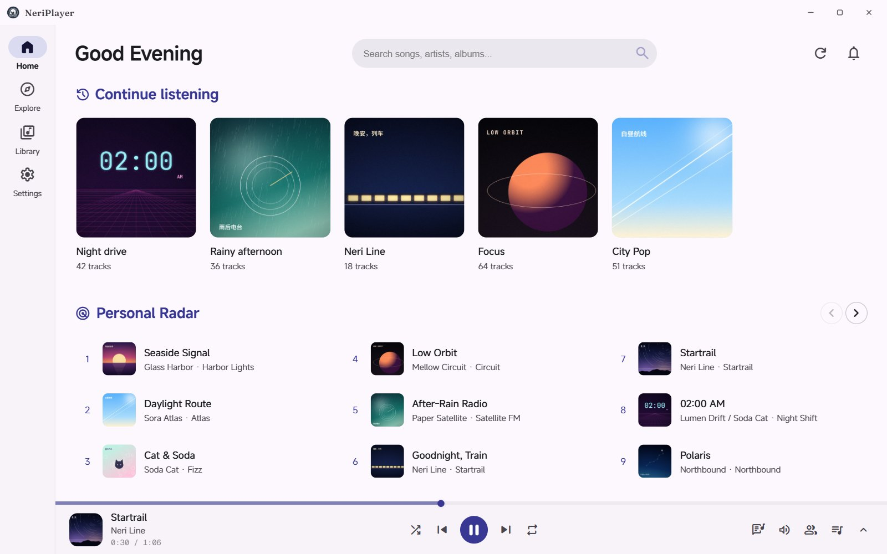
Preview simulation, not the final versionThe app you actually run is the reference for its interface and features.
The window holds the real interface structure and styles exported from the desktop front end, wired to this page’s player; the tracks and covers are NeriPlayer PV samples, and no account is signed in. Light and dark follow this page, and the system can be switched at the top right. The desktop app is still in preview and this simulation is a snapshot of one moment — the version you actually run is the reference.
Desktop lyrics · Tray · SMTC
A separate desktop lyrics window lights up word by word, in one line, two alternating lines or three scrolling lines, with the second line showing the translation or the next line. Colors, font, outline, shadow and opacity are all adjustable; once locked, clicks pass through while an unlock button stays on hover. Close the main window and it keeps playing from the tray, with media keys and the system media session still working.
Colors
Layout
Second line
Drag the lyrics bar, then click Neri in the tray at the bottom right ↘
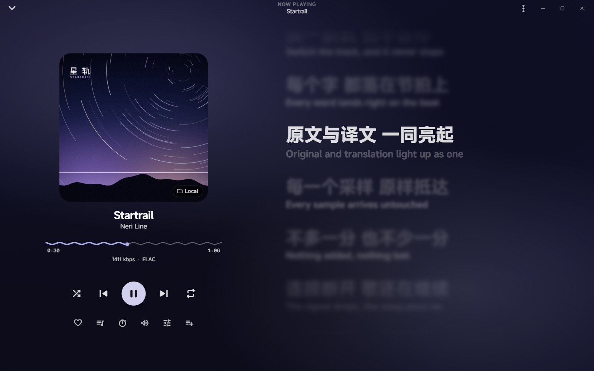
In-app shortcutsClick here, then try your keyboard
Windows · macOS · Linux
One Tauri 2 + Rust core, hooked into each system’s own media session, tray and audio output. The table lists the release workflow’s targets and the platform code in the source; how the tray, lyrics and media keys look still depends on the system and desktop environment.
You’re onWindows
| Feature | Windows | macOS | Linux |
|---|---|---|---|
| Media session | SMTC: lock screen, volume flyout and headset buttons | Now Playing: Control Center and media keys | MPRIS: GNOME / KDE media controls |
| Tray & background | Notification area icon; close to tray and keep playing | Menu bar icon; closing the window doesn’t quit | Status area icon (depends on the desktop environment) |
| Lyrics | Desktop lyrics with click-through when locked | Desktop lyrics + menu bar lyrics | Desktop lyrics with click-through when locked |
| Global shortcuts | Ctrl + Alt combos | Cmd + Option combos | Ctrl + Alt combos |
| Audio output | cpal · WASAPI | cpal · CoreAudio | cpal · ALSA |
| Packages | .exe (NSIS) · .msi | .dmg · Apple Silicon / Intel | .deb · .rpm · AppImage |
| Requires | x64 · WebView2 runtime | Apple Silicon 11.0+ · Intel 10.15+ | x64 · WebKitGTK 4.1 · GTK 3 |
| First launch | Not code-signed yet; choose “Run anyway” in SmartScreen | Ad-hoc signed; choose “Open Anyway” in Privacy & Security | Extract the AppImage and make it executable |
The desktop app has no in-app updater; grab new versions from Releases. USB exclusive, SAF and status bar lyrics are Android features; on desktop the tray, desktop lyrics, media session and shortcuts fill those roles.
14Details · 细节
Easy to overlook, but you run into them every day — so they got the same care.
Material You rounded cards colored from the cover, adapting to light and dark themes, large fonts and both orientations. The wide card adds favorite and desktop-lyrics buttons; even the narrow sizes keep previous, play and next, and elapsed time ticks every second while playing.
Shown: the widget previews bundled with the app.
Long-press the app icon to jump straight in; when there's no queue to restore, you get feedback instead of a silent failure.
Swipe the bottom mini player left or right for the previous / next track; tap to expand and play / pause work as usual.
Floating lyrics let you set color, outline, size, position and alignment; Meizu status-bar lyrics, SuperLyric, Lyricon and Bluetooth lyrics are supported.
Android Auto and devices with AVRCP browsing can browse the queue and playlists and search the library; connecting never starts playback by itself.
JVM crashes, native crashes and system ANRs are all recorded; after an abnormal exit, full initialization is skipped and the app goes straight into safe mode.
Long podcasts and multi-part videos pick up where you left off; an explicitly requested position always wins over the remembered one.
It works the same on a real device: tap the version 7 times in Settings and a Debug tab appears in the nav bar, with per-platform probes and a log viewer.
15Inside · 构造
The in-house Android libraries are split by domain, with dependency direction enforced in CI: :model depends on no implementation, :common on no business logic, and no library may depend on the app or form a cycle. The colored dots match the feature sections they serve.
iFAQ · 常见问题
It's completely free and open source under GPL-3.0. Because of the nature of the project, the maintainers don't accept sponsorships, donations or commercial funding of any kind. If you'd like to support it, open an issue or a PR, or share it with someone who needs it.
No. NeriPlayer doesn't run a public cloud library or any media distribution service. Online features rely on your own authorized accounts on third-party platforms, and premium or restricted content still follows each platform's rules. Only access, play or save content you own the rights to, are authorized for, or that the platform's rules allow.
Nowhere, by default: playback cache, downloads, playlists, history, stats, settings and credentials all stay on your device. Only when you turn on GitHub or WebDAV sync does metadata — playlists, favorites, recent plays and play stats — get written to a remote you control. Audio cache, downloads, cookies and playback tokens are never uploaded to anyone.
It's not that the app can't. But clients of centralized music platforms usually come with risk controls and behavior sampling, and reporting local play history directly could trigger suspicious-login flags, abnormal-playback flags or even a frozen account. To keep your account safe, NeriPlayer doesn't upload local play history or stats to these platforms for now.
Android 9 (API 28) and later. The RuntimeShader fluid background and advanced blur on Now Playing need Android 13+, and cover blur needs Android 12+; older versions fall back gracefully without affecting playback itself.
It only appears when the current song has romanization data. When it's on, romanization sits right beneath the original, in the translation's place; songs without it (Chinese songs, for example) only show “Trans”.
Not necessarily. You can use a server someone else has deployed, or deploy your own NeriPlayer-LTW to Cloudflare Workers in one click, then enter its address in Settings and test it. Room codes are 6 readable characters; local songs can't start a Listen Together room.
No. Credentials are stored on the device encrypted with Android Keystore, but files synced to the remote aren't end-to-end encrypted, so keep your repository and WebDAV account safe. A full config export includes credentials — it's meant for moving your own setup, so don't share it publicly.
It currently targets UAC1.0 devices and UAC2.0-compatible Type I PCM devices. UAC2 asynchronous links only accept devices with a single resolvable explicit feedback endpoint and a supported clock topology; anything else takes the compatible fallback. If the system restricts playback with the screen off, lift the battery and background restrictions as Settings suggests.
First tap the version 7 times in Settings to turn on developer mode; the app then writes file logs, with crash logs saved separately. Then open a GitHub issue with your Android version, device model, app version, steps to reproduce and the relevant logs. You can also filter logs with adb:
adb logcat | findstr NeriPlayer # Windows
adb logcat | grep NeriPlayer # Linux / macOSAlso note that a global proxy can make some third-party APIs return bad data, so set up your proxy rules sensibly.